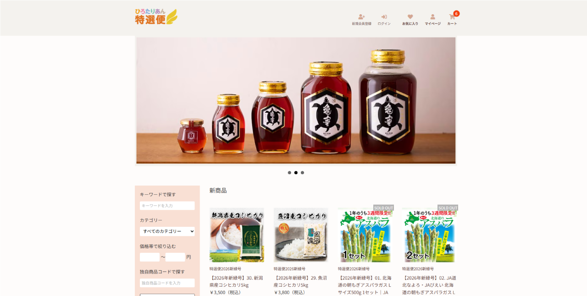

← 実績一覧へ戻る
← 実績一覧へ戻る
WEBショップの開設・構築・運営

課題（Before）
オンラインでの販売チャネルがなく、商品を届けられる範囲が限られていた。ショップの立ち上げには構築・商品登録・運営体制づくりまで幅広い作業が必要だった。
やったこと
- WEBショップの開設・構築を担当（ストア設計、商品ページの整備）
- 商品登録・受注対応・更新作業など、開設後の日々の運営まで一貫して担当
- ブランドサイト（hirotarian.ne.jp）とあわせた世界観づくり
成果（After）
開設から運営までを一人で完結し、現在も公開・運営中。
実際のショップ: shop.hirotarian.ne.jp
実際のショップ: shop.hirotarian.ne.jp